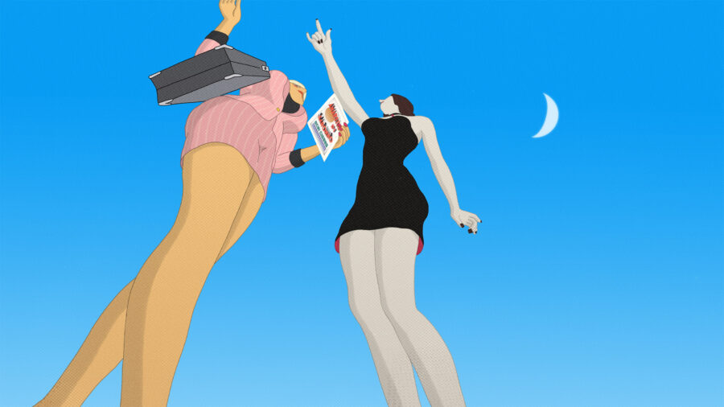

Conversations at the Edge | Priit Pärn and Olga Pärn: Luna Rossa
Legendary Estonian animators Priit Pärn and Olga Pärn join virtually from Tallinn for an evening of darkly funny, surreal, and politically incisive works, featuring their electrifying new film Luna Rossa (2024) and two of Priit’s defining films from the 1980s—The Triangle (1982) and Breakfast on the Grass (1987)—presented on rare 35mm prints from the National Archives of Estonia.
Followed by a virtual conversation with Priit Pärn and Olga Pärn and audience Q&A.
ABOUT THE ARTISTS
Priit Pärn is widely regarded as one of animation’s most original and influential voices. Trained initially as a biologist, he joined Tallinnfilm’s Joonisfilm studio in the 1970s and quickly became a defining figure of late- and post-Soviet animation. His landmark films—including The Triangle (1982), Breakfast on the Grass (1987), and Hotel E (1992)—have earned top prizes at major festivals such as Zagreb, Krakow, Valencia, and Annecy. Pärn has also had a profound impact as an educator, leading animation programs at the Turku School of Art and Media and the Estonian Academy of Arts. He has received numerous international lifetime achievement awards for his contributions to the field.
Olga Pärn is an award-winning animator, director, and illustrator known for her expressive, psychologically rich, and darkly humorous films. Trained in graphic arts in Belarus and in animation directing at La Poudrière in France, she has worked internationally since the 1990s. After relocating to Estonia in 2006, she began an ongoing creative partnership with Priit Pärn, co-directing acclaimed works such as Life without Gabriella Ferri (2008), Divers in the Rain (2010), and Pilots on the Way Home (2014). In addition to her filmmaking, she teaches animation and illustration across Europe.
CONVERSATIONS AT THE EDGE
Conversations at the Edge (CATE) is the School of the Art Institute of Chicago’s award-winning series for groundbreaking film and media art. Now in its 25th year, CATE is presented through a unique partnership between SAIC’s Department of Film, Video, New Media, and Animation; Video Data Bank; and the Siskel Film Center.
TICKETS